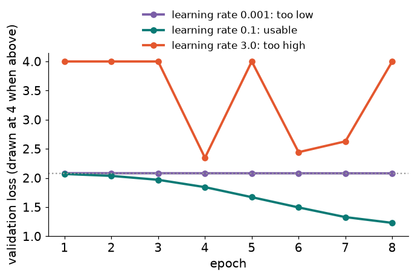

Names the pattern of a textile from a photograph: eight classes, 8,000 images. Days 1 and 2.
Khayt · the catalogue search
Finds products among 4,000 Arabic and English descriptions. Day 3.
Wasf · the description drafter
A small open-weight language model that writes one product line. Day 4.
Al-Nawl Crafts Cooperative is fictional. Every image, description and log is synthetic and drawn from a fixed seed. You are Zaid Al-Luhaidan, its junior machine learning engineer.
The week
Each day removes one layer of magic
Day 1Tensors and trainingthe loop, by hand
Day 2Vision and transfer800 labels are enough
Day 3Transformers and embeddingstokens, attention, search
Day 4Generation and choicesampling, limits, licences
Day 5 is yours: a small model for one use case, defended live.
What a tensor is
A tensor is an array with a shape, a number format and a device
Shape: how many axes, how long each one is
Number format: 32-bit floats by default; 64-bit when you check arithmetic
Device: the processor or a graphics processor; two tensors must share one
One more thing than an array: it can remember how it was computed
At Al-Nawl. A batch of four grey swatches of 24 by 24 pixels is a tensor of shape (4, 576).
Today's data
Eight patterns, laid straight on the sorting table
4,000 synthetic swatches: 3,000 to train, 500 to validate, 500 to test. Grey, 24 by 24 pixels, 576 numbers each.
Shapes
Predict the shape before you run the line
Operation
Shapes in
Shape out
X @ W1
(4, 576) and (576, 5)
(4, 5)
X @ W1 + b1
(4, 5) and (5,)
(4, 5)
X.mean(axis=0)
(4, 576)
(576,)
X.mean(axis=1, keepdims=True)
(4, 576)
(4, 1)
X - X.mean(axis=1)
(4, 576) and (4,)
an error
What goes wrong. Most deep learning bugs are shape bugs that do not raise an error: a shape of (4,) against (4, 1) broadcasts to (4, 4) and trains on nonsense.
Broadcasting
Shapes align from the right; a size of 1 stretches
Works
(4, 576) with (576,): the last axes match, the vector is repeated over the 4 rows. (4, 576) with (4, 1): the 1 stretches over the 576 columns.
Fails, or worse
(4, 576) with (4,): 576 against 4, an error. (4,) with (4, 1): no error, a (4, 4) table nobody asked for.
Habit. Print .shape after every new line until the shapes are boring.
The network of today
Two layers: multiply, bend, multiply, compare
InputX: (N, 576)
→
Layer 1z1 = X W1 + b1, then relu
→
Layer 2z2 = h W2 + b2: eight scores
→
Losssoftmax, then −log p of the true class
The eight raw scores are called logits; softmax turns them into probabilities
Cross-entropy is the mean of −log p(true class): 0 when certain and right, ln 8 = 2.08 when guessing among eight
Gradients
The backward pass is the chain rule, one local step at a time
Softmax with cross-entropy: dz2 = (p − onehot) / N
Linear layer: dW = a.T @ dz, db = dz.sum(0)
Pass back: da = dz @ W.T
Relu: the gradient passes where z1 > 0
One rule to check everything
A gradient has the shape of the thing it is the gradient of. dW1 is (576, 5) because W1 is.
You know this. It is the chain rule of FN-103, written for matrices. The lab does it for four swatches.
Automatic differentiation
The library records the forward pass and replays it backwards
Each operation adds a node to a computational graph
backward() applies the local rules from the loss to every leaf
Gradients add up in .grad until you clear them
1e-16
largest gap between hand and autograd in Lab 1.1, in 64-bit numbers; 9e-8 between a 32-bit and a 64-bit run
Checkpoint
Which gradient is right?
A layer computes z = a @ W + b with a of shape (32, 64) and W of shape (64, 8). You have dz, the gradient of the loss with respect to z. Which line gives the gradient for W?
dz @ W.T
a @ dz
a.T @ dz
dz.sum(axis=0)
Why. The gradient for W must have the shape of W, (64, 8). Only a.T @ dz, (64, 32) times (32, 8), has it.
The training step
Every training step is the same five lines
logits = model(xb) # 1 forward
loss = F.cross_entropy(logits, yb) # 2 loss
optimiser.zero_grad() # 3 clear old gradients
loss.backward() # 4 backward
optimiser.step() # 5 update the weights
From a two-layer network to a language model, these five lines do not change. What changes is the model, the data and the loss.
The loss
Cross-entropy takes logits, not probabilities
F.cross_entropy applies the softmax itself, in a numerically safe way
Its inputs: raw scores of shape (N, classes) and class numbers of shape (N,)
Give it probabilities and it applies a second softmax: no error, a loss that cannot reach zero
1.27
the loss of a perfect prediction when softmax is applied twice (Lab 1.4)
The optimiser
The optimiser is the rule that turns a gradient into a step
Gradient descent (SGD)
w = w − lr × grad. One setting: the learning rate is the step size and nothing else.
Adam
Keeps a running average of each weight's gradient and of its square, and scales every step by them. Forgiving: a rate of 0.001 works on most small problems.
In the labs. Adam when the point is the loop (1.2), plain gradient descent when the point is the learning rate (1.3, 1.4).
Batches
A mini-batch is a noisy, cheap estimate of the full gradient
All 3,000 swatches per step: an exact gradient, one update per pass
32 swatches per step: a noisy gradient, 94 updates per pass
An epoch is one pass over the training set in a new random order
Shuffle every epoch, and keep each input with its own label
What goes wrong. Inputs shuffled without their labels give a network nothing to learn.
Validation
The validation pass measures and must not learn
model.eval()
with torch.no_grad():
logits = model(Xva)
loss = F.cross_entropy(logits, yva)
acc = (logits.argmax(1) == yva)
.float().mean()
eval(): layers that behave differently in training switch to their test behaviour
no_grad(): no graph is recorded, so no memory and no time are spent on it
Once per epoch, on data the training step never sees
What a healthy run looks like
Both losses fall together, from chance towards zero
0.79
validation accuracy after 12 epochs; chance is 0.125
37,448 weights, Adam at 0.001, batches of 32. Validation loss from 1.99 to 0.70 (Lab 1.2, reference run).
Reproducibility
Two correct runs differ; say by how much they may
A different batch order or seed gives a different path to a similar place
Fix the seed to repeat your run; state a tolerance to compare with someone else's
Keep the curve as a file, with the settings that produced it
Experiment tracking (MLflow, TensorBoard) is this habit with a user interface: one record per run with its settings, its curves and its code version.
Checkpoint
The curve that jumps
Zaid's loop runs. The training loss falls for a few steps, then swings wildly and grows. His step has four lines: forward, loss, loss.backward(), optimiser.step(). What is the most likely cause?
Gradients from earlier steps are still added to each new one
The model was never put in evaluation mode
The batches were not shuffled between epochs
The batch size of 32 is too small for this network
Why. Without zero_grad() the gradients accumulate, so every update is larger and less related to the current batch.
The learning rate
Tune the learning rate first: it decides whether anything else matters

0.001: flat at 2.08, accuracy 0.11. Too low: the weights barely move
0.1: falls to 1.23, accuracy 0.62. Usable
3.0: between 2.4 and 12. Too high: every step overshoots
How to search
Sweep powers of ten, read curves, then refine
1 · Coarse0.001, 0.01, 0.1, 1: a few epochs each
→
2 · Readtoo low, usable or too high, from the validation curve
→
3 · Refinetwo or three values around the best one
Change one setting at a time, from the same starting weights
A larger batch gives a less noisy gradient and usually tolerates a larger rate
Schedules (warm-up, decay) shape the rate over time; a constant rate is the baseline
Overfitting
The gap between the two losses is what the network memorised
Training loss keeps falling as long as the network has capacity to spare
Validation loss stops falling when the rest is particular to the training examples
The gap grows with a larger network, a smaller training set, more epochs
At Al-Nawl. With 400 swatches and 256 hidden units: training loss 0.52, validation loss 0.95 after 60 epochs. A gap of 0.43 (Lab 1.3).
Regularisation
Dropout and weight decay make memorising harder
Dropout
In training, each hidden unit is switched off with probability p at every step. No unit can rely on one other unit. Off in evaluation mode.
Weight decay
Every step also pulls each weight a little towards zero. Large weights must earn their size.
Augmentation
Show changed copies that keep the label: a flipped or shifted image. More data without new labels. Day 2.
What goes wrong. Validating with dropout still on: the model is measured with half its units missing. This is what model.eval() prevents.
What the lab measured
The gap shrank; the validation loss hardly moved
400 swatches, 60 epochs
Training loss
Validation loss
Gap
Validation accuracy
Plain
0.52
0.95
0.43
0.64
Dropout 0.5
0.86
1.05
0.19
0.68
Weight decay 0.001
0.60
0.93
0.33
0.64
All 3,000 swatches, 12 epochs (Lab 1.2)
0.73
0.70
0
0.79
Read it honestly. Regularisation stops a network from flattering itself. It does not replace the data that is missing.
When to stop
Keep the weights of the best validation epoch
Watch the validation loss; save the weights whenever it improves
Patience: stop after this many epochs without an improvement
A noisy curve needs more patience: with 500 validation swatches, a patience of 3 stops on a bump
The stopping epoch is chosen on validation data; the test set is used once, at the end
In Lab 1.3. On the plain run, a patience of 3 keeps epoch 43; a patience of 10 keeps epoch 58, with a lower loss (0.93 against 0.98).
Reading curves
Four shapes cover most of what a curve can tell you
What you see
Likely meaning
First thing to try
Both losses flat at chance
Rate far too low, or no signal reaches the network
Overfit one batch (session 4)
Loss jumps, grows or becomes "nan"
Rate too high
Divide the rate by 10
Training falls, validation rises
Overfitting
Stop earlier, more data, regularise
Both fall slowly and are still falling
Not finished, or rate a little low
More epochs, or a rate 3 times larger
Checkpoint
What would you change first?
A network with 256 hidden units trains on 400 swatches. After 60 epochs the training loss is 0.20 and still falling; the validation loss reached 0.93 at epoch 35 and is now 1.10. Which change addresses what the curves show?
Raise the learning rate so that training converges faster
Add a second hidden layer of 256 units
Train for 60 more epochs until the training loss is near zero
Keep the weights of epoch 35 and get more labelled swatches
Why. Training falls while validation rises: overfitting. Stop at the best validation epoch; the lasting fix is more data.
Why this is hard
A broken training script usually runs without an error
Ordinary code fails loudly: an exception, a line number
Training code fails quietly: a number that is worse than it should be
Several faults stack, and each hides the others
So you need tests with a known right answer
logepoch 1 · train loss 2.130 · val loss 65.4 · val acc 0.124
logepoch 2 · train loss 2.148 · val loss 67.3 · val acc 0.126
logepoch 3 · train loss 2.149 · val loss 31.9 · val acc 0.128
The cheapest test
First, make the network memorise one batch
Take 16 examples. Train on them alone for a few hundred steps
A healthy model, loss and optimiser drive the loss towards zero
It takes seconds and has a known right answer
It fails
The fault is in the model, the loss or the update. More data will not help.
It passes, and full training still fails
Those three work. Look at what reaches them: the data pipeline.
The checklist
Five checks, from cheap to expensive
Run as found and write down the numbers: is the loss at chance, above it, "nan"?
Overfit one batch
Check the loss on a known case: a perfect prediction must cost about 0
Sweep the learning rate on the one-batch test, in powers of ten
Test the pipeline: does every input still travel with its own label?
One change at a time, and a log line for each. What you tested, what it showed, what you changed.
Stacked faults
A correct fix can leave the test failing
State of the script
One-batch loss after 300 steps
Verdict
As found
134.2
Fails
Loss input fixed, rate still 30
4.4
Fails: another fault
Loss input fixed, rate 0.1
0.08
Passes
What goes wrong. Undoing a correct fix because the curve did not improve. Keep the fix when its own check passes (a perfect prediction now costs 0), and look for the next fault.
The data pipeline
Tag every row and see whether the pairs survive
tag = torch.arange(40)
X = tag.float().unsqueeze(1)
for xb, yb in make_batches(X, tag, 8, g):
assert torch.equal(
xb.squeeze(1).long(), yb)
Give the pipeline inputs that are their labels
Any batch where they differ is a pipeline bug
Passing the one-batch test and sitting at exactly ln 8 on full data points here
2.08 → 1.23
validation loss with two fixes, and with the third (the data order), after 8 epochs (Lab 1.4)
Another data-order fault
A loss that falls within each class and jumps at the next
batch 132 stripes · loss 1.98
batch 1132 stripes · loss 0.51
batch 1332 chevrons · loss 4.35
batch 2332 chevrons · loss 1.37
epoch 3val acc 0.14 · 90% of validation swatches called "dot"
The swatches stored class by class and never shuffled: 87 of 94 batches hold one class
From the second class on, each class starts at 2.6 to 4.3 and ends its run at 1.4 to 2.3: the network learns "say chevron", and the next class punishes it
Pairs broken (Lab 1.4) look different: every batch loss stays between 2.06 and 2.12, near ln 8
The fix
Shuffle the examples, not the batches
Same swatches, same network, 3 epochs
Classes per batch
Validation accuracy
Stored order, class by class
1.07
0.14
One-class batches, taken in a new order each epoch
1.07
0.22
Swatches in a new random order each epoch
7.84
0.52
The test. Print the labels of the first three batches. A representative batch looks like the whole training set: most classes, in about their usual shares.
Beyond today's three
The usual suspects, by where they sit
Data
Labels shifted or shuffled away; inputs not normalised as the model expects; the same preprocessing missing at validation.
Model and loss
Wrong loss input; an output layer with the wrong number of classes; a silent broadcast between (N,) and (N, 1).
Update
Rate too high or too low; gradients never cleared; weights frozen by mistake; evaluation mode left on.
Checkpoint
Where is the fault?
Rayan trains a classifier on ten product categories. On 16 examples the loss reaches 0.02 in 200 steps. On the full training set it stays at 2.30 for 20 epochs, at every learning rate he tries. Where should he look first?
At the size of the network: it cannot hold ten categories
At the data pipeline: inputs and labels no longer match
At the loss function: it cannot reach zero
At the learning rate: it needs a finer sweep
Why. One batch can be memorised, so model, loss and update work. A loss of exactly ln 10 = 2.30 on the full data means the inputs say nothing about the labels.
Day 1 · wrap-up
Three things to keep
Shapes and gradients
Predict the shape first. A gradient has the shape of its weight, and autograd computes what you computed by hand.
Five lines and two curves
Forward, loss, clear, backward, update. Then read the training and validation losses together, against chance.
Debug with known answers
Overfit one batch first. Keep a correct fix even when the curve stays flat, and log every step.
Next
Day 2: Vision and transfer
The network that reached 0.79 on swatches meets the catalogue photographs. Unfinished labs can be finished at home; each one starts from supplied files.